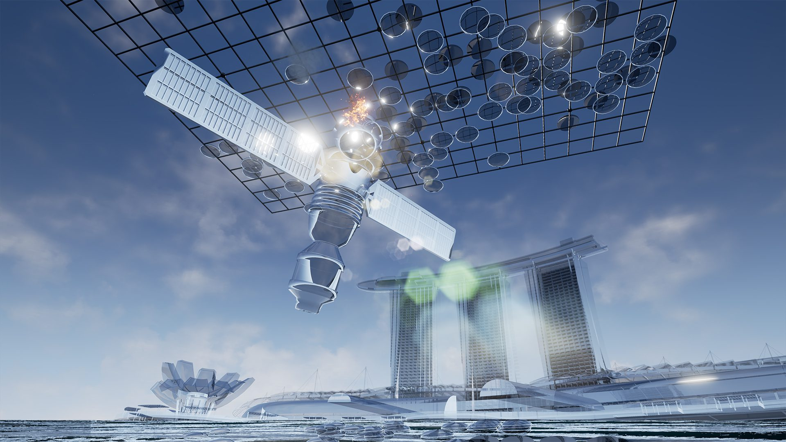
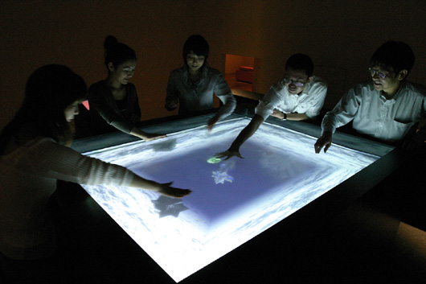
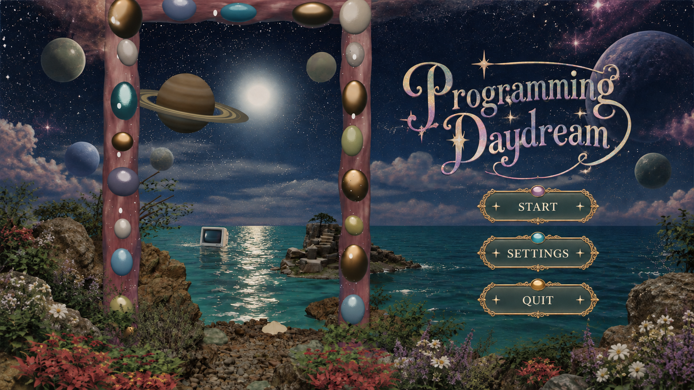
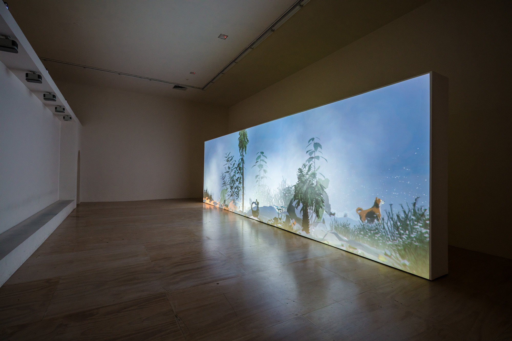

CLICK / SPACE = TIME WARP
GENERATIVE AI WORKFLOW FOR MEDIA ART
Quella · Personal Living Studio
QUELLA.OS / PLAYER'S ARCHIVE
Welcome To Quella's
Visual Journey.
DRAG THE STARFIELD TO EXPLORE · 03 JOURNEYS ONLINEMOVE THE WAND = BEND THE TIME RIFT
VISUAL JOURNEY 02
CGI ART / VIDEO ART / ANIMATION
2026 / 09 · FIVE SIGNALS
OPEN WORK / SOURCE ↗
TV BUDDHA — NAM JUNE PAIK, 1974
- Video sculpture: a Buddha watches its live image on a television.
- Learn: build a closed feedback loop between object, camera and screen.

OPEN WORK / SOURCE ↗
MOVIE-DROME — STAN VANDERBEEK, 1964–65
- A dome filled with simultaneous films and slides instead of one fixed screen.
- Learn: treat projection as spatial architecture, not a flat image.

OPEN WORK / SOURCE ↗
EMISSARIES — IAN CHENG, 2015–17
- Game-engine ecosystems unfold through agents, rules and unstable stories.
- Learn: let a world behave beyond the artist's direct control.

OPEN WORK / SOURCE ↗
GEOMANCER — LAWRENCE LEK, 2017
- A CGI film follows an AI satellite that wants to become an artist.
- Learn: use a game engine to stage atmosphere, memory and machine identity.

OPEN ARTIST WORLD ↗
LATURBO AVEDON — 2008–PRESENT
- A virtual avatar exists as both artist and artwork across online worlds.
- Learn: make the avatar an ongoing identity, not only a character model.
VISUAL JOURNEY 03
INTERACTIVE ART & GAME ART
2026 / 09 · FIVE LIVING SYSTEMS
OPEN WORK / SOURCE ↗
A-VOLVE — SOMMERER & MIGNONNEAU, 1994
- Visitors draw creatures, release them into a virtual pool and alter their survival.
- Learn: connect simple input to a living system with visible consequences.

OPEN WORK / SOURCE ↗
BODY MOVIES — RAFAEL LOZANO-HEMMER, 2001
- Passers-by reveal portraits by moving enlarged shadows across a public façade.
- Learn: make the participant's body both controller and image.

OPEN WORK / SOURCE ↗
THE NIGHT JOURNEY — BILL VIOLA + USC, 2007–18
- A slow, dreamlike game turns wandering into a journey toward enlightenment.
- Learn: let movement, pace and atmosphere carry meaning without goals.

OPEN WORK / SOURCE ↗
RMB CITY — CAO FEI, 2007–11
- A surreal Second Life city became a platform for events and virtual life.
- Learn: design a world as a social stage that keeps changing after launch.

OPEN WORK / SOURCE ↗
EVERYTHING — DAVID OREILLY, 2017
- Players can become animals, objects, planets or galaxies in one universe.
- Learn: use perspective-switching to turn interaction into an idea.
01 / MY EXPERIMENTS
02 + 03 / VISUAL REFERENCES
PROJECT / LEVEL SELECT

Programming Dream
A digital living system, learning to inhabit a dream.
ENTER PROJECTTHE LOST GAME ARCHIVE
VISUAL JOURNEY
SCROLL FREELY · CLICK ANY CARTRIDGELOADING 3D ARCHIVE…
DRAG / TRACKPAD · ← →
IDEA PRESENTATION · 2026
PROGRAMMING DREAM
An Interactive World Between Human Imagination and Machine Interpretation
01 / THE IDEA
WHAT IF A DRAWING COULD COME ALIVE?
PROGRAMMING DREAM
Drawing Life into a Digital Dream
Programming Dream is an interactive 3D experience that combines human creativity, deep learning, and a dreamlike virtual environment. Players explore an endless ocean, draw abstract patterns, and watch their drawings become digital creatures through AI interpretation.
EXPLORE → DRAW → INTERPRET → BRING TO LIFE
02 / MOTIVATION
CAN AI BECOME A CREATIVE PARTNER?
During an NVIDIA Deep Learning workshop, I learned about Convolutional Neural Networks (CNNs) and image classification. This made me curious about how machine learning could become part of an artistic experience, rather than simply a technical tool. I want to explore what happens when human imagination meets machine interpretation, especially when the AI understands something differently from what the player intended.
HUMAN IMAGINATION
Players express ideas through simple drawings.
MACHINE INTERPRETATION
A trained AI model interprets the visual patterns.
UNEXPECTED RESULTS
Different interpretations create new possibilities.
Central Interest: Human–AI collaboration, machine perception, and creative uncertainty.
03 / INSPIRATION
ARTIFICIAL LIFE & LIVING VIRTUAL WORLDS
My project is inspired by interactive artworks that explore artificial life and the relationship between humans and digital organisms. Both references demonstrate how computational systems can transform virtual creatures from simple visual objects into living, responsive experiences.

01 — EMISSARIES
Ian Cheng (2015–2017)
Live Simulation / Game Engine Art
A series of self-running simulations in which virtual characters interact within unpredictable digital ecosystems. It inspires me to create a virtual environment where creatures can exist and behave independently.
View Artwork ↗02 — A-VOLVE
Christa Sommerer & Laurent Mignonneau (1994)
Interactive Installation / Artificial Life
Visitors draw shapes on a touchscreen to create virtual organisms that swim and interact in a water environment. It directly inspires my drawing-to-creature interaction and the idea of giving digital forms a sense of life.
View Artwork ↗My Direction: Combining the living virtual worlds of Emissaries with the drawing-based interaction of A-Volve, while introducing CNN image classification and a surreal, dreamcore environment. The Museum of Modern Art
04 / PATHWAY & PLAN
FROM DRAWING TO DIGITAL LIFE
SELECTED PATHWAY — GAME ENGINE & INTERACTIVE MEDIA
I will develop a small interactive prototype in Unreal Engine 5.6. The player enters a dreamlike ocean, approaches a floating computer, and draws an abstract pattern. A trained CNN interprets the drawing and identifies a creature type. After confirmation, the corresponding 3D creature appears in the ocean, where the player can observe it and continue exploring.
PLAYER EXPERIENCE
01 — EXPLORE
Discover the floating computer in a surreal ocean.
3D Environment02 — CREATE
Draw a pattern and let AI classify it.
Drawing UI + CNN03 — BRING TO LIFE
Spawn a creature, explore, and repeat.
Real-time InteractionFINAL OUTCOME
One explorable environment · One AI drawing interface · Six low-poly creatures · One complete interaction loop
05 / TOOLS & AI
CONNECTING ART, AI & GAME DESIGN
The production combines 3D modelling, deep learning, and real-time interaction. I will create the environment and six low-poly creatures in Blender, develop the interactive experience using Unreal Engine and Blueprints, and train a CNN in Python to recognise abstract drawings. The trained model will then be connected to Unreal Engine so that each prediction can trigger the appearance of a corresponding creature.
PRODUCTION WORKFLOW
01 — 3D DESIGN
Blender + Unreal Engine 5.6Environment, creatures, lighting, and animation.
02 — AI TRAINING
Python + PyTorch + JupyterLabDrawing dataset, CNN training, and data augmentation.
03 — INTERACTIVE SYSTEM
UE5 Blueprints + Model InferenceDrawing interface, prediction results, and creature spawning.
ROLE OF AI
DRAWING → CNN CLASSIFICATION → PREDICTED LABEL → 3D CREATURE
AI acts as an interpreter, not a 3D generator. I design the creatures and their environment, while the trained model recognises the player's drawing and selects which creature appears.
06 / QUESTIONS & CHALLENGES
WHEN DOES AI BECOME MORE THAN A TOOL?
The main challenge is balancing technical accuracy with artistic experience. The CNN needs to recognise different drawing styles, the AI model must communicate with Unreal Engine, and the interaction should feel creative rather than like a simple classification test. I want to explore how both successful and unexpected interpretations can contribute to the experience.
AI RECOGNITION
How can the model recognise different drawing styles?
Dataset & AccuracyTECHNICAL INTEGRATION
How can AI predictions work smoothly inside UE5?
Real-time InferenceCREATIVE EXPERIENCE
How can machine interpretation become playful and meaningful?
Interaction & FeedbackTHE OPEN QUESTION
Can the difference between what we imagine and what AI understands become a new form of creative expression?
Programming Dream explores a world where human imagination begins the process, machine interpretation shapes the result, and digital life emerges.
THANK YOU.
PROJECT / LEVEL SELECT
Programming Dream
A small AI art experiment in a digital living system.
LEVEL 01 / CONCEPT
The floating computer
A computer drifts with the waves. Clicking it opens a drawing interface, where a model's prediction gives a creature its place in the dream.
OPEN PROPOSAL / 6 SLIDESThe living system
Draw a pattern. See the prediction. Meet the creature. Explore through its body.
The model and Unreal Engine connection are part of the production plan.
UNFILLED SPACE
← RETURN TO MAPEXPLORE IDEA PRESENTATION ↗FEEDBACK.EXE
Leave a message
Opening the message archive…
YOU ARE HERE / QUELLA'S CORNER OF THE INTERNET
ABOUT / PLAYER 01 ✧
welcome to
Quella's
small universe
Hi, I'm Quella.
This is my Personal Living Studio for
Generative AI Workflow for Media Art.
A place for things I make,
things I notice, and things still becoming.
LEFT FLAG / SURPRISE_NOTE.EXE